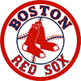
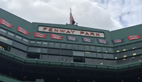
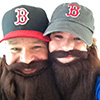

The Boston Red Sox
The Boston Red Sox are the American League Baseball Club located in Boston, Massachusetts. They are in the American League East Division along with the NY Yankees, Baltimore Orioles, Toronto Blue Jays, and the Tampa Bay Rays. The Red Sox have played in 12 World Series Championships, winning 8 of them, most recently in 2013.
View from home plate, 2014
The Boston Red Sox are one of the eight teams that founded the American League in 1901. Originally named the Boston Americans, the Red Sox's name change occurred in 1908 as other teams moved from the Boston area. Boston won the first World Series in 1903. Following another World Series win in 1918, the Red Sox suffered an 86 year drought before winning it again in 2004. World Series titles in 2007 and 2013 made them the first team to win 3 championships in the 21st Century.
The Boston Red Sox play at Fenway Park located in the Fenway/Kenmore Square area of the City of Boston. They have played there since 1912, making Fenway Park the oldest Major League Baseball park still in operation. Boston's main rivals are the New York Yankees, although recently the Rays of Tampa Bay have become a close second.
The Beginning
My family moved to Providence, RI during the summer of 1975. I was 6 years old. I became interested in the Red Sox, and baseball, because my new friends were consumed with it. It is difficult to grow up in New England without hearing about the Red Sox, Celtics, Bruins, or Patriots on a daily basis. I did not mind; I grew to love all of those teams and they have given me 40 years of ups and downs. But, the Red Sox hold a special place with me.
Fear the Beard
In 1979, I entered a contest to meet Jim Rice and Butch Hobson, two popular Red Sox players. The contest was through one of the local supermarkets and was a lottery pulling winning entries from all of the stores in RI, CT, and MA. I spent an entire day filling out the little entry forms and stuffed about 500 of them in the box. A few weeks later I received a letter that I had won. Along with about 20 other kids from the region, I went to Fenway Park and had lunch with Rice and Hobson, received a variety of signed items, and participated in batting practice. It was a great day.